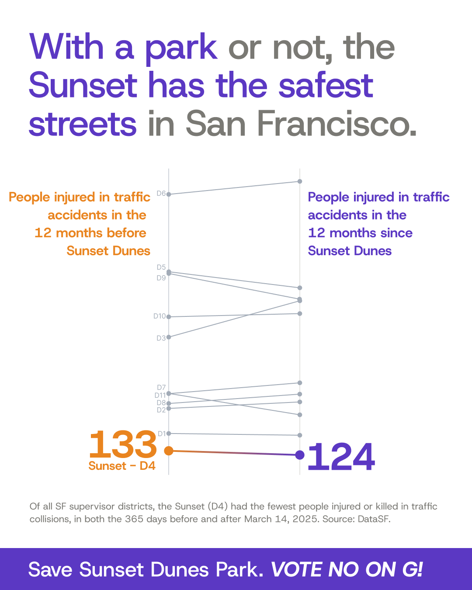

Source: DataSF, “Traffic Crashes Resulting in Injury” (dataset ID ubvf-ztfx),
data.sf.gov/Public-Safety/Traffic-Crashes-Resulting-in-Injury/ubvf-ztfx.
Data current as of Oct 20, 2026.
Metric: People hurt (injured or killed) = number_injured + number_killed, summed by calendar year for crashes in supervisor_district 4 (the Sunset), 2014–2025. Averages cover 2014–2019 and 2020–2025.

Source: DataSF, “Traffic Crashes Resulting in Injury” (dataset ID ubvf-ztfx),
data.sf.gov/Public-Safety/Traffic-Crashes-Resulting-in-Injury/ubvf-ztfx.
Data current as of Oct 20, 2026.
Metric: People hurt (injured or killed) = number_injured + number_killed, summed for each supervisor district (current 2022 boundaries). Crashes with no district are excluded.
Time periods: On March 14, 2025, the Upper Great Highway closed to cars and became park space available to the public 24/7 (official opening ceremony for Sunset Dunes: April 12, 2025). “12 months before Sunset Dunes” is March 14, 2024 – March 13, 2025; “12 months since Sunset Dunes” is March 14, 2025 – March 13, 2026 (365 days each).